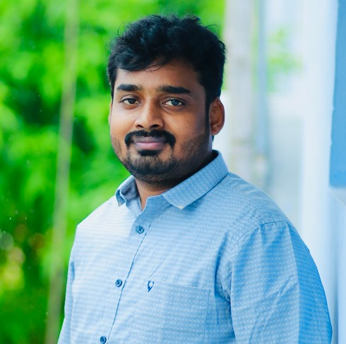
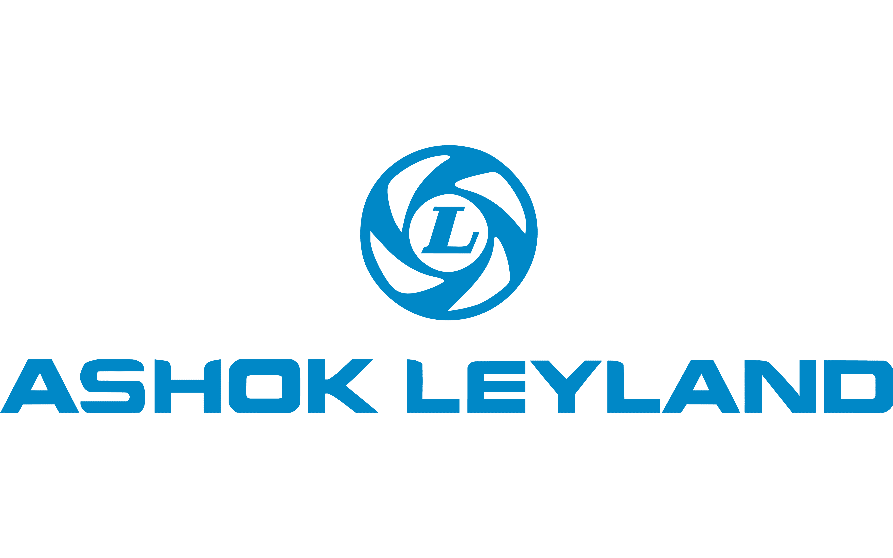
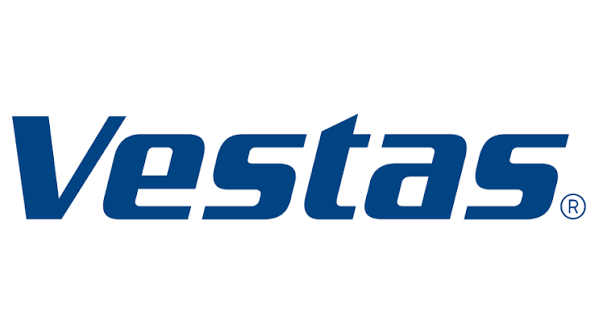
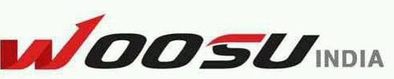

Engineering Better Products Through Reliability,
Innovation & Technical Leadership.
Engineering professional with 13+ years of experience delivering
innovative engineering solutions across Automotive,
Renewable Energy and Industrial Gearbox industries.

Years Experience
Global Companies
Industries
Engineering Projects
I am an Engineering Leader with over 13 years of experience in Product Development, Reliability Engineering, Root Cause Analysis (RCA), and Technical Leadership across Automotive, Renewable Energy, and Industrial Gearbox industries.
Throughout my career at Ashok Leyland, Vestas, Flender, and Woosu Automotive, I have led multidisciplinary engineering initiatives, solved complex field failures, improved product reliability, and delivered innovative engineering solutions that enhance customer satisfaction and business performance.
My passion lies in developing robust engineering solutions, mentoring teams, driving continuous improvement, and transforming technical challenges into business opportunities.
Leading cross-functional engineering teams to deliver reliable products.
Expert in Root Cause Analysis, DFMEA, Design Validation and warranty reduction.
Experienced in complete product lifecycle from concept to production.
Delivering engineering improvements that enhance performance and reduce cost.
13+ Years of Engineering Leadership, Product Development, Reliability Engineering & Root Cause Analysis.
Years Experience
Global Companies
Industries
Engineering Projects

Leading product development for commercial vehicle rear axles, technical problem solving, validation activities, customer issue resolution and engineering improvements.

Led global engineering initiatives to improve wind turbine reliability through product improvements and structured RCA.
Designed and developed industrial gearbox solutions for global applications.

Supported complete product development activities from concept to production.
Delivering innovative engineering solutions through product development, reliability improvement, structured Root Cause Analysis, and technical leadership.
Leading rear axle development, validation, warranty reduction, and engineering improvements for commercial vehicles.
Improved fleet reliability through Root Cause Analysis, DFMEA and engineering design improvements.
Designed industrial gearbox solutions using ISO 6336, bearing selection and localization strategies.
Supported complete product lifecycle through APQP, PPAP, FMEA and engineering change management.
A comprehensive blend of engineering knowledge, digital tools, and leadership capabilities developed across Automotive, Renewable Energy, and Industrial Gearbox industries.
Milestones that reflect my commitment to technical excellence, innovation, continuous improvement and engineering leadership.
Successfully delivering engineering solutions across Automotive, Renewable Energy and Industrial Power Transmission.
Worked with international engineering teams, customers and suppliers to solve complex technical problems.
Product Development, Reliability Engineering, Industrial Gearboxes, Wind Turbines and Commercial Vehicles.
Led structured investigations that transformed field failures into sustainable engineering improvements.
Strengthened technical and managerial capabilities through advanced postgraduate engineering education.
Led engineering reviews, mentored colleagues, and collaborated across multidisciplinary teams.
Building technical expertise through higher education, professional certifications and continuous learning.
Strengthened leadership, Design thinking strategy, operations management and engineering decision-making.
SACS MAVMM Engineering College, Madurai.
PA Polytechnic College, Pollachi.
Structured problem solving, process capability and quality improvement.
Advanced mechanical design, assemblies and engineering drawings.
Engineering is not merely about designing products. It is about understanding failures, learning from data, empowering teams, and delivering reliable solutions that create lasting value for customers.
A selection of representative engineering projects demonstrating technical leadership, structured problem-solving, and product improvement across multiple industries.
Led engineering activities supporting rear axle product development, validation planning, cross-functional collaboration, and continuous product improvement for commercial vehicles.
Investigated fleet field issues using structured Root Cause Analysis, DFMEA and engineering improvements to enhance product reliability.
Developed industrial gearbox solutions through analytical design, bearing selection, localization and engineering optimization.
Combining technical expertise, structured problem-solving, and leadership to deliver reliable products and business value.
Driving products from concept through validation to successful launch.
Leading structured investigations using 8D, DFMEA, and data-driven methods.
Improving durability, reliability, and long-term product performance.
Leading cross-functional teams to deliver engineering excellence.
Whether you're looking for an Engineering Leader, Product Development expert, or Reliability Engineering specialist, I'd be delighted to discuss how I can contribute to your organization.
jaikey07@gmail.com
+91 97902 18521
Chennai, Tamil Nadu, India